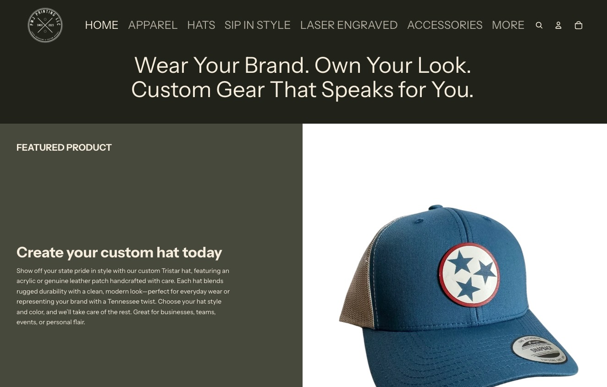
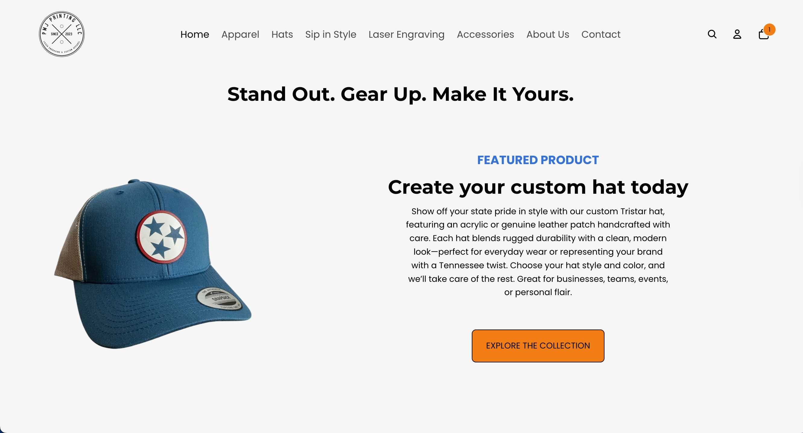
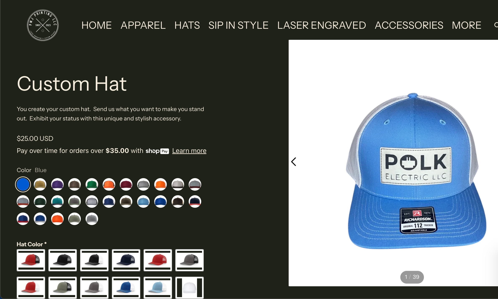
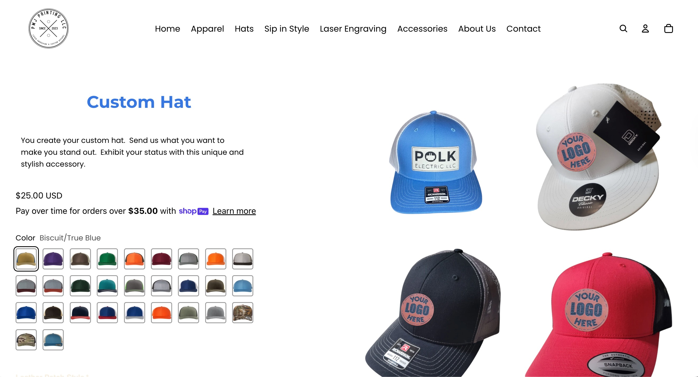
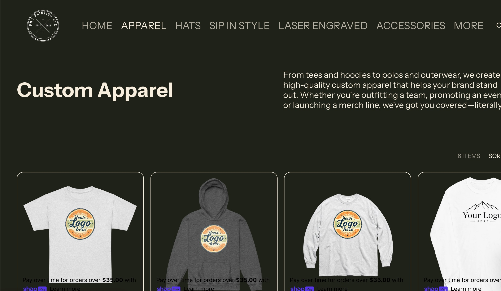
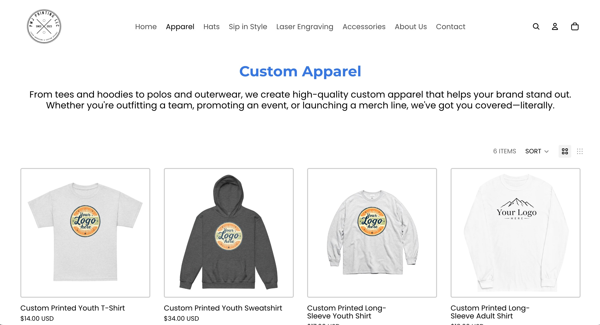
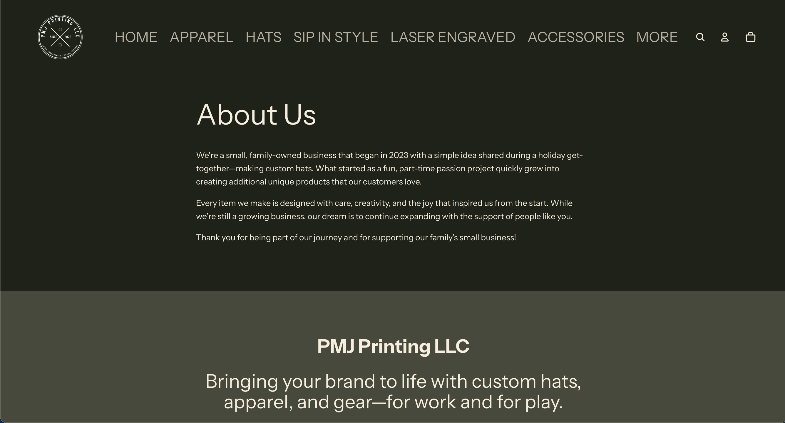
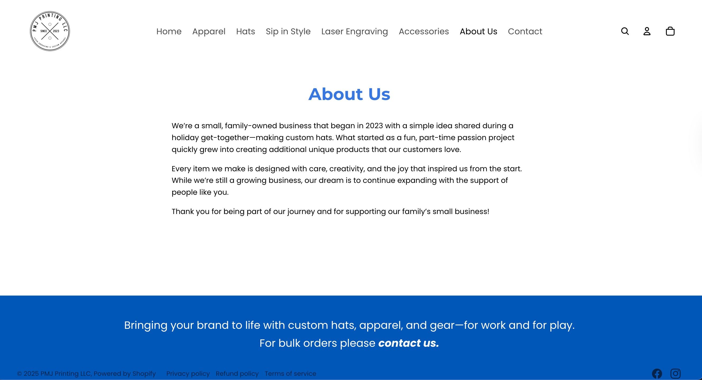
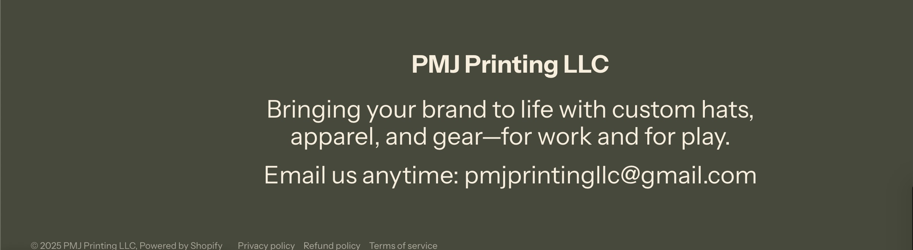

Hello! I'm Chris.
Frontend / Full-Stack Engineer
Product-minded engineer who ships and owns user-centered
web applications end-to-end.
I build and maintain production web applications from concept to launch, owning the full lifecycle — problem definition, UX flow design, implementation, deployment, and iteration.
I bring years of real-world delivery discipline into my engineering work, allowing me to move fast without breaking trust. I’m comfortable making tradeoffs, reducing risk through iteration, and shipping software that works in practice, not just in theory.
My technical toolkit includes Next.js, React, TypeScript, and modern backend services, paired with Agile delivery principles, performance optimization, and continuous improvement through user feedback.
I’m most effective in environments that value ownership, clarity, and engineers whose code directly impacts the business.
Skills
| Area | Technologies |
|---|---|
| Frontend & Application Development | JavaScript, TypeScript, React, Next.js, HTML5, CSS3, TailwindCSS, Zustand |
| Backend & Data | Node.js, Express, REST APIs, MongoDB, Supabase (PostgreSQL), Convex, Authentication, Row‑Level Security (RLS) |
| Cloud & Deployment | Vercel, AWS Amplify, CI/CD Pipelines, Git, GitHub |
| Product & Delivery Fluency | Agile/Scrum, Feature Scoping, UX/Product Thinking, Stakeholder Communication, Iterative Delivery, Performance Optimization |
Latest Projects
March 2026 — Submitted to App Store
Mountain Pathway | Full-Stack Faith-Centered Journaling App
A faith-centered journaling app guiding users through a structured 9-step reflective experience. Built and shipped as a full-stack production product across web and iOS — with real users, a TestFlight beta program, and a completed App Store submission.
What I Built & Shipped
- Conceived and shipped a guided 9-step journaling experience, translating abstract spiritual reflection into a clear, repeatable interaction flow
- Implemented full Supabase authentication — sign up, login, forgot password, and password reset — with a patched open redirect vulnerability using strict URL origin validation
- Built journey saving and persistence so users can return to and resume saved journeys across sessions, with Row Level Security (RLS) scoping each user's data
- Wrapped the web app as a native iOS app using Capacitor; ran a structured TestFlight beta program with real users and iterated on UI, layout, and auth flows from their feedback
- Implemented deep linking so password reset emails open directly in the app, and configured iOS AutoFill support with Keychain-friendly form semantics
- Implemented ambient audio playback and subtle motion to support stillness without distracting from content
- Built PDF export functionality at journey completion to allow users to retain reflections offline
Product & UX Ownership
- Owned the full product lifecycle: problem definition, UX flow design, technical architecture, development, deployment, and post-launch iteration
- Balanced feature development with performance, accessibility, and emotional design considerations
- Established a forward-looking roadmap based on user behavior and scalability needs rather than speculative features
V2 Strategic Roadmap
- Multiple guided journaling “trails” with distinct themes and step structures
- Android / cross-platform support via Capacitor
- Push notifications and journaling streaks for habit formation
- Enhanced rich-text and media support for reflection entries
- Community features for shared journaling and group discipleship paths
Tech Stack
- Framework: Next.js (App Router, React Server Components)
- Language: TypeScript
- UI & Styling: Tailwind CSS, shadcn/ui, Radix UI
- State Management: Zustand (+ persist)
- Backend & Auth: Supabase (PostgreSQL, Row Level Security, Auth)
- Mobile: Capacitor (iOS native wrapper), deep linking, iOS AutoFill
- Animation: Framer Motion
- PDF Generation: jsPDF, html2canvas
- Audio: HTML5 Audio API
- Testing: Vitest
- Dev & Deployment: ESLint, Prettier, GitHub, Vercel
June 2025
Pickleball Court Hub
Pickleball Court Hub is a full-stack web app that helps players discover and share courts across the U.S. With an interactive map, real-time search, and user-submitted listings, it makes finding places to play fast and easy. Users can create profiles, add new courts, and connect with their local community. A mobile-first design and admin dashboard ensure the app stays accurate, accessible, and ready to scale.
April 2025
The Digital Dragon Market
A sleek e-commerce platform built with Next.js and Stripe, featuring a responsive design and smooth shopping experience. The project showcases modern web development practices with optimized performance, secure payments, and an intuitive user interface.
February 2025
Brogram
A modern React application that guides users through a structured "Bro Split" workout program. Built with React and Vite, it features an intuitive interface for tracking workouts, following proper exercise tempo, and monitoring progress. The app helps fitness enthusiasts achieve their goals through a scientifically-backed Push/Pull/Legs training methodology.
January 2025
Movie Search
A React-based web application that lets users search and discover movies. Features include movie search functionality, popular movies display, and a favorites system. Built with modern React practices, the app demonstrates clean code organization, API integration, and responsive design principles.
December 2024
Acme Rockets
A responsive website for "Acme Rockets" showcasing modern web development skills using HTML, Tailwind CSS, and JavaScript. Features include a mobile-friendly design, dark mode support, interactive navigation, and a clean, professional layout with product showcases and testimonials.
Case Study: PMJ Printing: E-commerce Site Revamp for 99% Desktop Performance
Landing Page


Hat Page


Apparel Page


About Us Page


Footer

Audit (Before)
Website Audit Report: PMJ Printing LLC
General Impressions
- Website structure is functional and navigation mostly works.
- The design feels dark and dated; could benefit from a brighter, cleaner look to match modern e-commerce expectations.
- Shopify is being used (good choice for scalability), but some elements need refinement for consistency and professionalism.
Key Findings & Recommendations
-
Branding & Logo
- Logo is too small and hard to read.
- Suggestion: Resize and ensure logo is high-resolution for better visibility.
-
Navigation
- All nav links functional except “More”, which leads nowhere.
- Suggestion: Either remove or link to additional content (FAQs, About, Blog).
-
Product Display
- Inconsistent card design:
- Apparel page → dark background
- Hats page → light background
- Product images vary in size, creating a cluttered look.
- Suggestion: Standardize product card background and image dimensions for a uniform catalog feel.
- Inconsistent card design:
-
Footer
- Footer is oversized, which distracts from product content.
- Suggestion: Reduce height, simplify design, and make it functional (quick links, social media, small contact info).
-
Contact Options
- Currently only shows an email address.
- Suggestion: Add a contact form and possibly a simple chatbot for basic inquiries.
Proposal & Implementation
- Brighten site color scheme (update theme settings in Shopify).
- Resize and clean up logo.
- Standardize product card backgrounds & image sizing.
- Fix navigation (remove or update “More”).
- Redesign footer for a cleaner, professional look.
- Add a contact form (Shopify app or built-in form).
Client Testimonial
“Chris took our vision and turned it into a reality, creating a website that perfectly reflects our family business. He was easy to work with, timely, and brought creative ideas that elevated the final product. It was a pleasure collaborating with him, and we would gladly work with him again.”